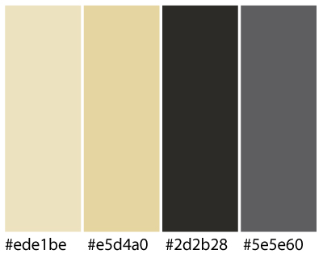
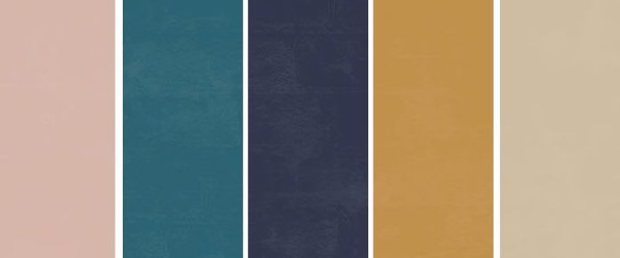
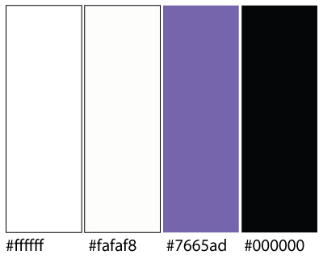
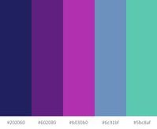

The Wor(l)d In Progress
The title of our project has the aim to merge the two basic consepts we wanted to develop:
- The WORLD - the common subject of the articles: the importance of preserving the planet. We have been choosing our articles from the AEON megazine, in particular in the Science section we found a very good selection of essays, well documented and historically relevant on the issue of nature.
- The WORD - the work we have been dealing with on typography. For the development of the styles we have had as primary reference the essay of Guity Novin.
Both concepts keep in an unstable situation. The environmental problems require attention and continous research to be solved. The typography evolution since the Medieval manuscript to the more recent technologies and standard keep improving and adapt to the new devices.
With the W.I.P. acronym we wanted to remind the typical situation of a work that never ends. It's always in progress...and we hope for the better.
We found also a perfect fitting graphic inspiration in the illustration of Claire Scully. In her works there is often the theme of nature, she has a deep attention on the details of plants and flowers.
In particular we have been inspired by this illustration:

The image is representative for us because it shows a group of people committed in the coloring activity of plans and flowers. The artist left part of the subject in white, giving the feeling of a work in progress.
We have used this illustration as model for creating our logo and our about pictures. Additionally we have created our primary palette by picking the basic colors from it.
Medieval
Typographic style
For the Medieval themed CSS style, documents from around 1500 have been chosen as an inspiration. Right after the the Invention of Gutenberg's printing press, in Europe mainly fraktur (also called blackletter) scripts were used. Often, pages were set in two colums and for detailing or overall page design, the golden ratio (1/1,618) was used. The color schemes were normally limited to few colours, since using more colour meant making the printing process more complicated or even required adding details manually.
Fonts and Typographic elements
For Wor(l)dInProgress, the fraktur font UnifrakturMaguntia
was chosen. The name Maguntia hints to the fact that it was create to resemble the style of Gutenberg's printing press, since he lived in the city of Mainz (Maguntia in latin). The column gap was chosen to be larger than in most modern documents, which resembles Gutenberg's bible as well as an example for a Medieval document from Guity Novin's article, that was mentioned earlier. In the detailing, the golden ratio was used several times for margins and spacing.
Palette
Since the dropcap was really common and often had a special style in 15th century-prints, a dark green that matches the sand-shaded background and can be found in our colour palette was chosen. The background resembles an aged piece of paper and for details, shades of sand and a very dark grey were used in order to match the main colours and give the page an old
feel.
19th Century
Typographic style
By the end of the nineteenth century thanks to the activity of Koenig & Bauer arrived first in United States and then in Europe the so called web press. It brought a more imaginative and flexible approach towards design, with the explosion of ads, competing for the readers attention. The web press was able to cut the paper fed from a roll into sheets before they were printed. The machine also allowed for a variety of sheet sizes.
Fonts and Typographic elements
The fonts used for this typographic style are various just like the sizes that are extremes small and big. The Libre Bodoni has been used for the paragraph's body and to highlight key concepts and titles the IBM Plex serif and Arial Black.
Palette
The color chosen for the background wanted to recall the kind of papaer of the press in that period, still not clean and white, but more amber or beige.
Firsthalf 20th
Typographic style
The early 20th century was marked by the arrival of Art Deco, short for Arts Décoratifs. The Art Deco movement draws its inspiration from Cubism, Fauvism, Futurism and Constructivism. It is known for extravagant use of geometric shapes and exuberant colors in design. Art Deco is all about luxury, which is captured by this typography in terms of font, background and color palette.
Fonts and Typographic elements
The fonts used in this typography are Limelight and Poiret One. Limelight is a sensitive rendition of the classic high contrast art deco style geometric sans serif. This style is often used to suggest the 1920's time period as well as the theatre generally and hollywood filmmaking in particular. Poiret One is a unique typeface with light forms and pure elegance. Sleek and simple. Based on geometric forms, it has stylish lines and graceful curves.
Palette
The dominant color is a mix of gold and black, to suggest the sense of luxury and decadence of the period, complemented by beige and dark green.
Secondhalf 20th
Typographic style
After the second world war, the so-called International Style or Swiss Style became popular - First in Switzerland and soon all over Europe and the world. Swiss Style's most improtant characteristics are an overall simplicity that is matched with dynamic elements to make the design memorable and pleasing to look at. In line with the clean style, sans-serif/grotesk font styles were used, the most famous of them being Helvetica. For Wor(l)dInProgress, a grid, that adds dynamic through alternating between left and right was created.
Fonts and Typographic elements
To match the Swiss Style, Space Grotesk
for the main elements and Helvetica
for some of the details were chosen. Dropacps were kept rather small and simple to not draw too much attention to them. The text was aligned on the right side, since this was also a common element of the Swiss Style
Palette
The palette was chosen to have two dominating colours, grey and lilac. They give the text a clean look, but enough contrast to make the grid stand out.
Late 20th
Typographic style
The column grid appears dominant in this period, in particular for modern megazine. The first letter is the element of relevance, with extreme big size and different colour.
Fonts and Typographic elements
The fonts chosen for this style are Pacifico cursive for titles to give contrast with the white background, Oswald for subtitles, stretched to give upward momentum and Times New Roman for the body text. It appeard in 1929 in the Times newspapaer and became a standard for graced typografic styles.
Palette
The white space became essential part of the composition and the megazines's typografist look for balancing composition with the integration of photos.
2030
Typographic style
Web design in the future will be increasingly interactive and minimalistic. Users feel engaged as the website can respond to their gestures. They can also navigate the website better and focus on a few elements at a time. Being constantly bombarded with information, minimalistic design helps the user to reduce distraction and process a moderate amount of information effectively during a limited amount of time.
Fonts and Typographic elements
The two fonts used are Orbitron and Exo. Orbitron is a geometric sans-serif typeface intended for display purposes. It was initially published on the League of Movable Type. Orbitron was remastered as a variable font in 2019.Exo is a contemporary geometric sans serif typeface that tries to convey a technological/futuristic feeling while keeping an elegant design.
The navigation buttons have hover effects to increase the interactiveness of the website.
The background color is an animation of linear gradient colors. It is a thematic change that is central enough to keep the user engaged, while remaining discrete to not distract them from reading.
Palette
The color palette includes predominantly neon colors to increase the luminosity of the background.
